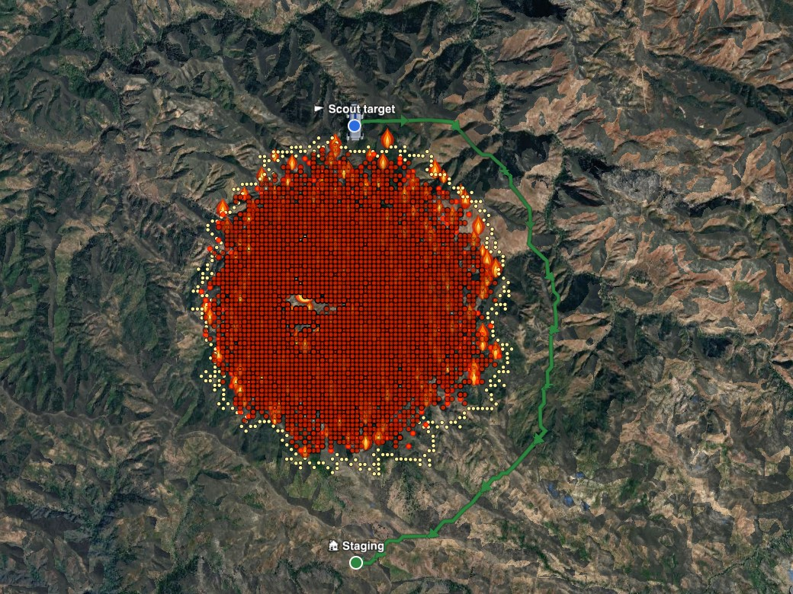

Fire-Aware Robot Dogs
Machine-Learning Wildfire Forecasts for Safe Navigation and Scouting
Shawn Zeng · Monta Vista High School
One afternoon at a Big Sur fire
A simulated mission. Every picture is from our simulator.

Crew chief“Too steep and smoky to send people. Send the dog.”
3:00 PMThe fire has burned since midnight on steep, brushy slopes. The crew needs to know where the edge is going.

Robot dog“Route is clear by 30 min.”
3:00 PM · PlanOn its forecast, the dog plans a route (blue) that passes every spot 30+ min before the fire, slower through brush and uphill.

💨 Wind shift!
3:30 PM · SurpriseThe wind shifts and the real fire turns. The forecast doesn't know: match 82% → 61%. The escape path home (green) stays open.

Robot dog“40 °C here, wind from 45°. Not what we thought.”
3:45 PM · MeasureIts sensors see the real fire coming. It measures wind, temperature, humidity and the fire edge and sends them back.

Forecast“Corrected: 61% → 80%.”
4:45 PM · ScoutOn the corrected forecast the dog re-plans, reaches the fire edge and scouts it.
✓ Home safe
0 people sent to the fire edge
Forecast match 61% → 80%
Fire margin kept: ≥ 30 min
~8 PM · HomeBack at staging before the fire arrives. The crew plans with a better forecast.
The loop behind the story:
Predict→Safe route→Escape path→Scout→Feedback↺
Know where the fire will be — not just where it is.
🧑🚒
Safer crewsFewer firefighters sent into danger to look.
🛡️
Robot stays safeRoutes and exits keep it from getting trapped.
📍
Smarter sensingMeasure where it changes decisions.